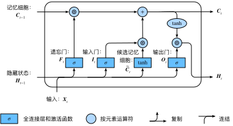

LSTM
模型简介
长短期记忆（英语：Long Short-Term Memory，LSTM）是一种时间循环神经网络（RNN）[1]，论文首次发表于1997年。由于独特的设计结构，LSTM适合于处理和预测时间序列中间隔和延迟非常长的重要事件。
LSTM的表现通常比时间循环神经网络及隐马尔科夫模型（HMM）更好，比如用在不分段连续手写识别上[2]。2009年，用LSTM构建的人工神经网络模型赢得过ICDAR手写识别比赛冠军。LSTM还普遍用于自主语音识别，2013年运用TIMIT自然演讲数据库达成17.7%错误率的纪录。作为非线性模型，LSTM可作为复杂的非线性单元用于构造更大型深度神经网络。
通常情况，一个LSTM单元由细胞单元（cell）、输入门（input gate）、输出门（output gate）[3]、遗忘门（forget gate）[4]组成。
记忆神经元
LSTM是一种含有LSTM区块（blocks）或其他的一种类神经网络，文献或其他资料中LSTM区块可能被描述成智能网络单元，也可以称为记忆神经元。因为它可以记忆不定时间长度的数值，区块中有一个gate能够决定input是否重要到能被记住及能不能被输出output。
如下图所示，遗忘门控制上一时间步的记忆细胞Ct−1𝐶𝑡−1中的信息是否传递到当前时间步，而输入门则控制当前时间步的输入Xt𝑋𝑡通过候选记忆细胞Ct𝐶𝑡如何流入当前时间步的记忆细胞。如果遗忘门一直近似1且输入门一直近似0，过去的记忆细胞将一直通过时间保存并传递至当前时间步。这个设计可以应对循环神经网络中的梯度衰减问题，并更好地捕捉时间序列中时间步距离较大的依赖关系。
LSTM有很多个版本，其中一个重要的版本是GRU（Gated Recurrent Unit）[10]，根据谷歌的测试表明，LSTM中最重要的是Forget gate，其次是Input gate，最次是Output gate[11]。

方程
变量
: LSTM的input（输入）
- 𝑓𝑡∈𝑅ℎ
: forget gate（遗忘阀）
- 𝑖𝑡∈𝑅ℎ
: input gate（输入阀）
- 𝑜𝑡∈𝑅ℎ
: output gate（输出阀）
- ℎ𝑡∈𝑅ℎ
: hidden state（隐藏状态）
- 𝑐𝑡∈𝑅ℎ
: cell state（单元状态）
- 𝑊∈𝑅ℎ×𝑑
、𝑈∈𝑅ℎ×ℎ
、𝑏∈𝑅ℎ
: 训练中的矩阵，网络学习计算元值
训练方法
为了最小化训练误差，梯度下降法（Gradient descent）如：应用时序性倒传递算法，可用来依据错误修改每次的权重。梯度下降法在循环神经网络（RNN）中主要的问题初次在1991年发现，就是误差梯度随着事件间的时间长度成指数般的消失。当设置了LSTM 区块时，误差也随着倒回计算，从output影响回input阶段的每一个gate，直到这个数值被过滤掉。因此正常的倒循环类神经是一个有效训练LSTM区块记住长时间数值的方法。